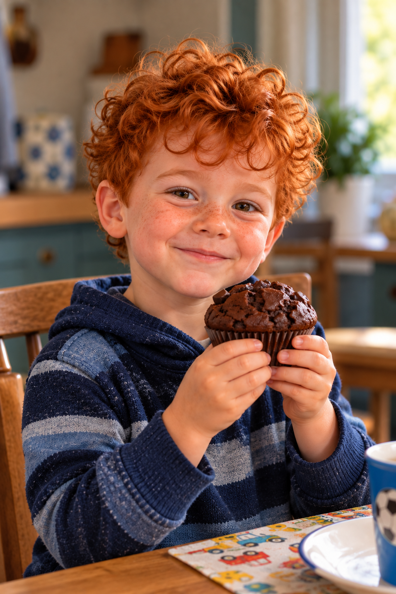
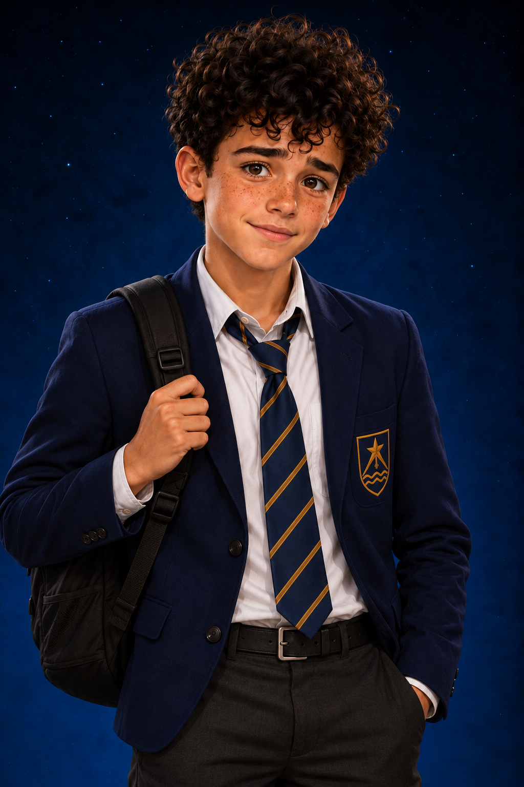
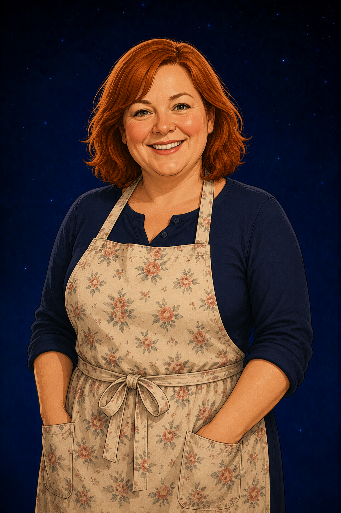

AGE
Five
Young, enthusiastic and completely comfortable saying exactly what is on his mind.

Alex Frayne's Brother
“Mumfins.”
Five years old. Alex Frayne's little brother, enthusiastic about almost everything and particularly devoted to Mrs Morrow's muffins.
WHO IS JAMIE?
Jamie is Alex Frayne's five-year-old brother. He brings a younger, wonderfully uncomplicated view of Jake and Alex's world—and food is often much more interesting to him than whatever the older children are worrying about.
In This Is My New Beginning, Jamie joins the Frayne family during the Christmas period and quickly makes himself at home with the Morrows. Mrs Morrow's baking makes an especially strong impression.
He calls muffins “mumfins”, arrives holding Alex's hand and is quite capable of eating one before remembering that the paper case is not normally part of the recipe. His scenes add warmth and small-child comedy to the final book of the Jake series.
AT A GLANCE
AGE
Young, enthusiastic and completely comfortable saying exactly what is on his mind.
BIG BROTHER
Jamie arrives at the Morrows holding Alex's hand. Alex may tease him, but their brotherly affection is obvious.
FAVOURITE THINGS
Jamie is so impressed by Mrs Morrow's muffins that “muffin” becomes “mumfin”. Even the paper case does not slow him down for long.
SUPERPOWER
Jamie does not have to try to be funny. His complete seriousness about food and the important business of being five does the job for him.
A SMALL PART WITH A BIG SMILE
Alex reminds Jake that courage is easier to find when someone is willing to stand beside you, laugh with you and occasionally get into trouble with you too.
PEOPLE CLOSE TO JAMIE
At five, Jamie's world is smaller than Alex's—but he quickly becomes comfortable around the Morrows and their friends.

BIG BROTHER
Jamie arrives at the Morrows holding Alex's hand. Alex may be one of Jake's closest friends, but to Jamie he is simply his big brother.

ALEX'S BEST FRIEND
Jamie becomes part of Jake's family celebrations through Alex, adding a five-year-old's view to the older children's world.

MAKER OF “MUMFINS”
Jamie is delighted to see the person responsible for his favourite muffins and wastes very little time asking where they are.
FIVE YEARS OLD. ONE IMPORTANT QUESTION.
Jamie may be one of the youngest characters in Jake's world, but he knows exactly what matters when he visits the Morrows: finding the muffins.
Meet the Rest of the Cast